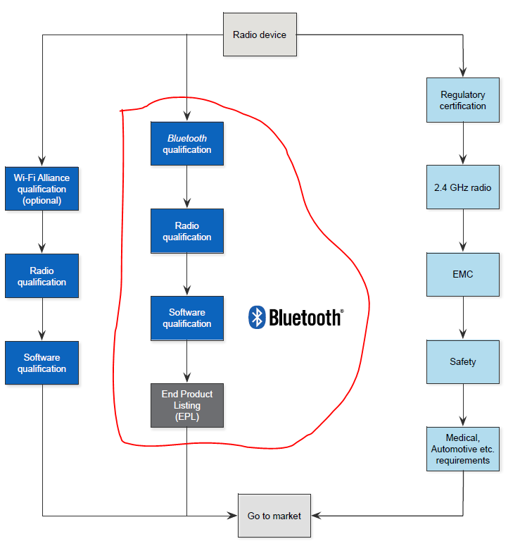
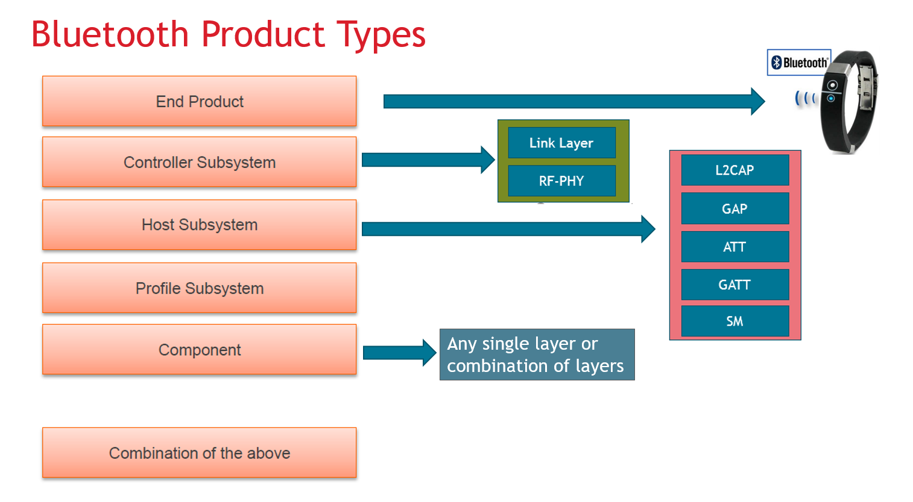

BluetoothQualification
Table of Contents
1 Bluetooth Qualification Process
1.1 General Description

All Bluetooth products must be qualified, in order to
- Verify conformance
- Grant IP license
- Logo and word mark usage rights
- Promote interoperability
Consists of three steps
- Radio qualification
- Controller Subsystem
- Software qualification
- Host Subsystem
- End product listing
- Controller Subsystem combined with Host Subsystem
1.2 Radio Qualification
- Verify the radio’s conformance to the Bluetoothspecification
- Radio testing at Bluetooth Qualified Test Facility
- AT4 wireless
- SGS
- UL
- etc.
- Obtaining QDID from Bluetooth SIG
- Component or subsystem listing
1.3 Software Qualification
- Verify the Bluetooth stack’s conformance to Bluetooth specification
- Protocol testing at a Bluetooth Qualified Test Facility (or
Profile Tuning Suite, PTS)
- RFCOMM
- L2CAP
- ATT
- etc.
- Profile testing at a Bluetooth Qualified Test Facility (or PTS)
- SPP
- A2DP
- Proximity
- etc.
- Obtaining QDID from Bluetooth SIG
- Component or Subsystem listing
1.4 End Product Listing
- Combining the Subsystems to an end product
- End products can be sold as is without limitations of the Bluetooth license
- End products represent a complete Bluetooth wireless solution
- Typically a combination of two (or three) Subsystems:
- A Bluetooth Controller Subsystem (radio and HCI)
- A Bluetooth Host Subsystem (protocols and profiles)
- Profile Subsystem (profiles)
- End Product Listing process changed 1st of February 2014:
- Qualification of Bluetooth products is still necessary –just like before
- Multiple EPLs can however be made with a single fee as long as the Bluetooth components (hardware and software) remain the same.
2 Bluetooth qualified designs
There are three main categories in the Bluetooth qualification: End Products, Subsystems and Components. Subsystems and Components categories can be divided into subcategories.
The picture below demonstrates different types of Bluetooth qualified design.

2.1 End Product
Every product sold in the market which has a functional implementation of the Bluetooth technology must be qualified as an End Product and listed in a directory of commercially available products maintained by the SIG. End Products may be independently functional Bluetooth devices, and for example Silicon Labs BGM111 is qualified as an End Product. End Products are as such when they are based on pre-qualified Host and a Controller Subsystems at a minimum (in addition they may also include Subsystems related to Protocols/Services/Profiles) or when they are based on pre-qualified tested Components which are combined to cover the required layers for the independently functional Bluetooth device.
2.2 Subsystems
There are three subcategories for Subsystems: Controller Subsystem, Host Subsystem and Profile Subsystem.
A Controller Subsystem must be eventually combined with a complementary Host Subsystem to create a complete Bluetooth core architecture required for operation. A Controller Subsystem may be for example an USB commercial Bluetooth Dongle containing the RF-PHY and Link layer implementations, normally below the standardized HCI software and hardware interface of the Bluetooth stack.
A Host Subsystem must be eventually combined with a complementary Controller Subsystem. A Host Subsystem may be for example the Bluetooth stack and application software running in an Operating System, provided by the OS itself or by a third-party. Profile Subsystem must eventually be combined with a complementary End Product or Host Subsystem and may be for example a product enhancement application implementing one or more of the adopted Bluetooth profiles.
A Profile Subsystem is not mandatory for obtaining an End Product Listing, but might be used to ensure and demonstrate the compatibility to an adopted profile.
2.3 Components
Qualified Component designs do not have minimum layer support. They can be made of any layer or combination of layers. Component(s) combined together or with Subsystem(s) are the necessary parts to create a new End Product or Subsystem qualified design. Qualified Components are usually specific layers for example Silicon Labs RF-PHY layer. These qualified layers can be used in a design and re-performing tests are not needed.
3 Related Websites
- Android QDID list
- Stack and Profile: https://www.bluetooth.org/tpg/QLI_viewQDL.cfm?qid=21772
- MSM™ chipset:
- Controller:
- RF(for WCN3620)
- (for WCN3660, WCN3680)
- QCA chipset: